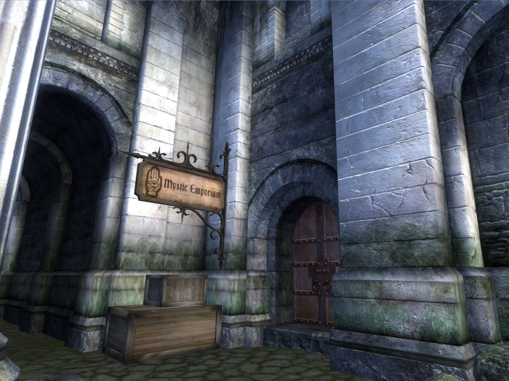
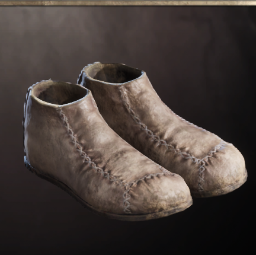
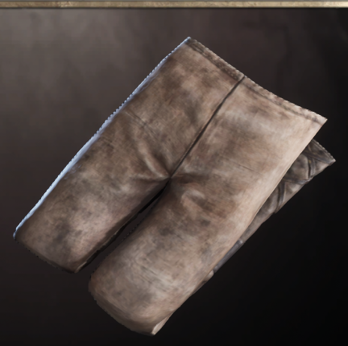

Discover Calindil’s Curios
Run by Calindil, the High Elf enchanter, our Emporium in the Imperial City Market District offers scrolls, soul gems, and exclusive magic items—from Feather Shoes to the famed Hands of the Atronach.
Signature Artifacts
Hands of the Atronach
Grants spell absorption at the cost of Magicka regeneration.

Feather Shoes
Enhances jumping ability with a whisper-light step.

Fortify Fatigue Pants
Boosts your endurance in the heat of battle.
Frostcrag Spire Essentials
Visit Aurelinwae upstairs for all your Frostcrag Spire expansion needs—alchemy labs, library wings, and enchanted Magetallow candles.
- Frostcrag Alchemy Lab
- Library Area
- Magetallow Candles
Receive Exclusive Arcane Deals
Subscribe now and get a coupon for 25% off your first purchase of rare scrolls or soul gems.
Traveler Tales
“Calindil’s Hands of the Atronach saved me from certain doom!”
— Arch-Mage Aranwen
“Aurelinwae’s candles lit the way through Frostcrag’s darkest halls.”
— Thane Rendar